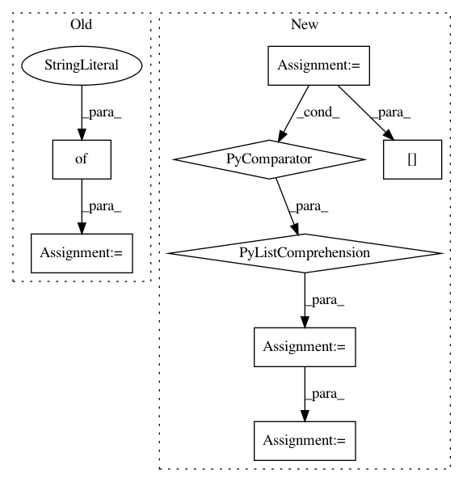

285dc85691241532cd976e04a089f409e44d7493,src/detection/tensor/detector.py,Detector,detect_multiple,#Detector#,40
Before Change
softmax_tensor = self.sess.graph.get_tensor_by_name("final_result:0")
answers = []
for image in image_array_list:
predictions = self.sess.run(softmax_tensor, {"DecodeJpeg:0": image})
predictions = np.squeeze(predictions)
answer = {}
for node_id in range(len(predictions)):
answer[self.labels[node_id]] = predictions[node_id]
answers.append(answer)
return answers
@staticmethod
After Change
with tf.device("/gpu:0"):
softmax_tensor = self.sess.graph.get_tensor_by_name("final_result:0")
threads = [pool.apply_async(operation, args=(self.sess, softmax_tensor, image_array_list[i],)) for i in
range(10)]
results = []
for x in threads:
results.append(x.get())
return results
@staticmethod
def _pil_to_tf(image):
In pattern: SUPERPATTERN
Frequency: 3
Non-data size: 8
Instances
Project Name: geometalab/OSMDeepOD
Commit Name: 285dc85691241532cd976e04a089f409e44d7493
Time: 2016-08-12
Author: samuel.kurath@gmail.com
File Name: src/detection/tensor/detector.py
Class Name: Detector
Method Name: detect_multiple
Project Name: geometalab/OSMDeepOD
Commit Name: 59d84cd18324aa86373091c8a0c262e6536d32fe
Time: 2016-08-12
Author: samuel.kurath@gmail.com
File Name: src/detection/tensor/detector.py
Class Name: Detector
Method Name: detect
Project Name: arviz-devs/arviz
Commit Name: fff2b2fcaad05ad7fd020e3cf96a8edd49d62084
Time: 2021-01-13
Author: oriol.abril.pla@gmail.com
File Name: arviz/wrappers/base.py
Class Name: SamplingWrapper
Method Name: log_likelihood__i